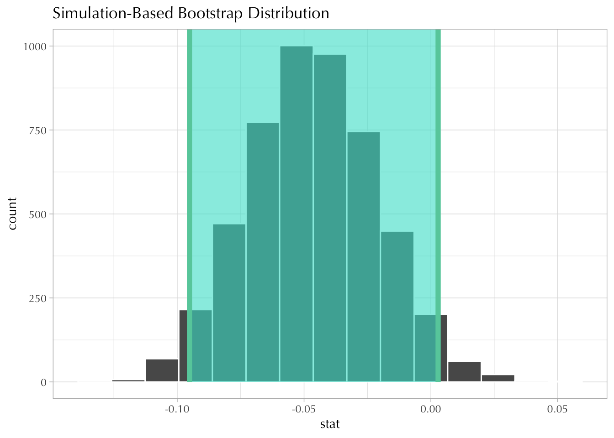

library(tidyverse)
library(gssr)
library(infer)
theme_set(theme_light(base_family = "Optima"))
gss18 <- gss_get_yr(2018) HW9_syQiu
Set up dataset and package
9.1 cappun & weekly
d <- gss18 |>
select(attend, polviews, cappun) |>
haven::zap_missing() |>
haven::zap_labels() |>
mutate(
weekly = factor(if_else(attend >= 7, 1L, 0L), levels = c(0L, 1L), labels = c("Non-weekly", "Weekly")),
conservative = factor(if_else(polviews >= 5, 1L, 0L), levels = c(0L, 1L), labels = c("Non-conservative", "Conservative")),
penalty = factor(if_else(cappun == 1, 1L, 0L), levels = c(0L, 1L), labels = c("Oppose","Favor"))
) |>
drop_na() |>
select(penalty, weekly, conservative)
crosstab <- table(d$weekly, d$penalty)
prop.table(crosstab, margin = 1)
Oppose Favor
Non-weekly 0.3585828 0.6414172
Weekly 0.4043011 0.59569899.1.1 2*2
Linear Probability Model
As a linear probability model, the relationship between cappun (\(Y\)) and weekly (\(X\)) can be expressed as following:
\[ Y=\alpha+\beta X \]
Based on the contingency table, we can calculate the value of \(\alpha\) and \(\beta\):
\(\alpha\) = 0.6414
\(\beta\) = -0.0457
The value of \(\beta\) indicates that the probability of those who favor the death penalty for those who convicted murder is lower among those who attend the religious services weekly than among those who do not by 4.57 percentage points.
Logistic Regression Model
As a logistic regression model, the relationship between cappun (\(Y\)) and weekly (\(X\)) can also be expressed using the above model, but the left hand side is the logit.
Based on the contingency table, we can calculate the value of \(\alpha\) and \(\beta\):
\(\alpha\) = 0.5815
\(\beta\) = -0.1939
The value of \(\beta\) indicates that those who attend the religious services weekly have a lower log odds of favoring death penalty for murderers than those who do not by 0.19
Bonus
boot_df <- d |>
specify(penalty ~ weekly, success = "Favor") |>
generate(reps = 5000, type = "bootstrap") |>
calculate("diff in props", order = c("Weekly","Non-weekly"))
mean(boot_df$stat)[1] -0.04660175sd(boot_df$stat)[1] 0.02529412ci <- boot_df |>
get_confidence_interval(level = 0.95)
ci# A tibble: 1 × 2
lower_ci upper_ci
<dbl> <dbl>
1 -0.0951 0.00285boot_df |>
visualise() +
shade_ci(ci)
The standard error of \(\beta\) is 0.0253 , as estimated from the bootstrap simulation. The 95% confidence interval is (-0.0951, 0.0029).
9.1.2 2*2*2
crosstab <- table(d$weekly, d$penalty, d$conservative)
crosstab, , = Non-conservative
Oppose Favor
Non-weekly 485 682
Weekly 115 123
, , = Conservative
Oppose Favor
Non-weekly 102 368
Weekly 73 154prop.table(crosstab, margin = c(1, 3)), , = Non-conservative
Oppose Favor
Non-weekly 0.4155955 0.5844045
Weekly 0.4831933 0.5168067
, , = Conservative
Oppose Favor
Non-weekly 0.2170213 0.7829787
Weekly 0.3215859 0.6784141The relationship between cappun (\(Y\)), weekly (\(X_1\)) and conservative (\(X_2\)) could be written as the following model with interactive term:
\[ Y = \alpha+\beta_1X_1+\beta_2X_2+\beta_3X_1X_2 \]
Linear Probability Model
The left hand side of the model is the conditional probability of \(Y = 1\) in the linear probability model.
alpha = prop.table(crosstab, margin = c(1,3))[1,2,1]
beta1 = prop.table(crosstab, margin = c(1,3))[2,2,1]-alpha
beta2 = prop.table(crosstab, margin = c(1,3))[1,2,2]-alpha
beta3 = prop.table(crosstab, margin = c(1,3))[2,2,2]-alpha-beta1-beta2\(\alpha\) = 0.5844
\(\beta_1\) = -0.0676
\(\beta_2\) = 0.1986
\(\beta_3\) = -0.037
Interpretation of coefficients:
\(\beta_1\): attending religious services weekly alone decreases the probability of favoring the penalty for murderers by -6.76 percentage points.
\(\beta_2\): being conservative alone increases the probability of favoring the penalty for murderers by 19.86 percentage points.
\(\beta_1+\beta_2+\beta_3\): attending religious services weekly as well as being conservative together would increase the probability of favoring the penalty for murderers by 9.4 percentage points.
Logistic Regression Model
The left hand side of the model is the logit of \(Y\) in the logistic regression model
alpha = log(crosstab[1,2,1]/crosstab[1,1,1])
beta1 = log(crosstab[2,2,1]/crosstab[2,1,1])-alpha
beta2 = log(crosstab[1,2,2]/crosstab[1,1,2])-alpha
beta3 = log(crosstab[2,2,2]/crosstab[2,1,2])-alpha-beta1-beta2\(\alpha\) = 0.3409
\(\beta_1\) = -0.2736
\(\beta_2\) = 0.9422
\(\beta_3\) = -0.263
Interpretation of coefficients:
\(\beta_1\): attending religious services weekly alone decreases the odds of favoring the penalty for murderers by 0.76 times.
\(\beta_2\): being conservative alone increases the odds of favoring the penalty for murderers by 2.57 times.
\(\beta_1+\beta_2+\beta_3\): attending religious services weekly as well as being conservative together would increase the odds of favoring the penalty for murderers by 1.5 times.
Bonus
boot_df <- d |>
mutate(penalty = as.numeric(penalty) - 1) |>
specify(penalty ~ weekly * conservative) |>
generate(reps = 5000, type = "bootstrap") |>
fit(family = "gaussian")
observed_fit <- d |>
mutate(penalty = as.numeric(penalty) - 1) |>
specify(penalty ~ weekly * conservative) %>%
fit(family = "gaussian")
coef_estimate <- boot_df |>
group_by(term) |>
summarise(
mean_coef = mean(estimate),
sd_coef = sd(estimate)
)
ci_df <- get_confidence_interval(
boot_df,
point_estimate = observed_fit,
level = .95
)
result_df <- coef_estimate |>
left_join(ci_df, by = "term")
result_df# A tibble: 4 × 5
term mean_coef sd_coef lower_ci upper_ci
<chr> <dbl> <dbl> <dbl> <dbl>
1 conservativeConservative 0.198 0.0237 0.152 0.245
2 intercept 0.584 0.0144 0.556 0.612
3 weeklyWeekly -0.0679 0.0353 -0.135 0.000577
4 weeklyWeekly:conservativeConservative -0.0366 0.0504 -0.135 0.0602 Therefore the standard error of \(\beta_{weekly}\) in the linear probability model is 0.0353. The confidence interval is (-0.1346, 6^{-4})
9.2 xmarsex ~ married * sex
The relationship between exmarsex (\(Y\)), married (\(X_1\)) and female (\(X_2\)) could be written as the following model with interactive term:
\[ Y = \alpha+\beta_1X_1+\beta_2X_2+\beta_3X_1X_2 \]
d <- gss18 |>
select(marital, sex, xmarsex) |>
haven::zap_missing() |>
haven::zap_labels() |>
mutate(
married = factor(if_else(marital == 1, 1L, 0L), levels = c(0L, 1L), labels = c("Not married", "Married")),
female = factor(if_else(sex == 2, 1L, 0L), levels = c(0L, 1L), labels = c("Male", "Female")),
exmarsex = factor(if_else(xmarsex == 1, 1L, 0L), levels = c(0L, 1L), labels = c("Not always", "Always"))
) |>
drop_na() |>
select(married, female, exmarsex)
crosstab <- table(d$married, d$exmarsex, d$female)
crosstab, , = Male
Not always Always
Not married 128 278
Married 77 207
, , = Female
Not always Always
Not married 103 392
Married 72 294prop.table(crosstab, margin = c(1, 3)), , = Male
Not always Always
Not married 0.3152709 0.6847291
Married 0.2711268 0.7288732
, , = Female
Not always Always
Not married 0.2080808 0.7919192
Married 0.1967213 0.8032787Linear Probability Model
The left hand side of the model is the conditional probability of \(Y = 1\) in the linear probability model.
alpha = prop.table(crosstab, margin = c(1,3))[1,2,1]
beta1 = prop.table(crosstab, margin = c(1,3))[2,2,1]-alpha
beta2 = prop.table(crosstab, margin = c(1,3))[1,2,2]-alpha
beta3 = prop.table(crosstab, margin = c(1,3))[2,2,2]-alpha-beta1-beta2\(\alpha\) = 0.6847
\(\beta_1\) = 0.0441
\(\beta_2\) = 0.1072
\(\beta_3\) = -0.0328
Interpretation of coefficients:
\(\beta_1\): getting married alone increases the probability of always think extra-marital sex wrong by 4.41 percentage points.
\(\beta_2\): being female alone increases the probability of always think extra-marital sex wrong by 10.72 percentage points.
\(\beta_1+\beta_2+\beta_3\): getting married as well as being female together would increase the probability of always think extra-marital sex wrong by 11.85 percentage points.
Logistic Regression Model
The left hand side of the model is the logit of \(Y\) in the logistic regression model
alpha = log(crosstab[1,2,1]/crosstab[1,1,1])
beta1 = log(crosstab[2,2,1]/crosstab[2,1,1])-alpha
beta2 = log(crosstab[1,2,2]/crosstab[1,1,2])-alpha
beta3 = log(crosstab[2,2,2]/crosstab[2,1,2])-alpha-beta1-beta2\(\alpha\) = 0.7756
\(\beta_1\) = 0.2133
\(\beta_2\) = 0.5609
\(\beta_3\) = -0.1429
Interpretation of coefficients:
\(\beta_1\): getting married alone increases the odds of always think extra-marital sex wrong by 1.24 times.
\(\beta_2\): being female alone increases the odds of always think extra-marital sex wrong by 1.75 times.
\(\beta_1+\beta_2+\beta_3\): getting married as well as being female together would increase the odds of always think extra-marital sex wrong by by 1.88 times.
Bonus
boot_df <- d |>
mutate(exmarsex = as.numeric(exmarsex) - 1) |>
specify(exmarsex ~ married * female) |>
generate(reps = 5000, type = "bootstrap") |>
fit(family = "gaussian")
observed_fit <- d |>
mutate(exmarsex = as.numeric(exmarsex) - 1) |>
specify(exmarsex ~ married * female) %>%
fit(family = "gaussian")
coef_estimate <- boot_df |>
group_by(term) |>
summarise(
mean_coef = mean(estimate),
sd_coef = sd(estimate)
)
ci_df <- get_confidence_interval(
boot_df,
point_estimate = observed_fit,
level = .95
)
result_df <- coef_estimate |>
left_join(ci_df, by = "term")
result_df# A tibble: 4 × 5
term mean_coef sd_coef lower_ci upper_ci
<chr> <dbl> <dbl> <dbl> <dbl>
1 femaleFemale 0.108 0.0296 0.0507 0.166
2 intercept 0.685 0.0233 0.639 0.729
3 marriedMarried 0.0445 0.0351 -0.0257 0.112
4 marriedMarried:femaleFemale -0.0336 0.0452 -0.123 0.05389.3 Inter-generational Bachelor’s Degree
The relationship between r_gtba (\(Y\)), f_gtba (\(X_1\)) and m_gtba (\(X_2\)) could be written as the following model with interactive term:
\[ Y = \alpha+\beta_1X_1+\beta_2X_2+\beta_3X_1X_2 \]
d <- gss18 |>
select(degree, padeg, madeg) |>
haven::zap_missing() |>
haven::zap_labels() |>
mutate(
r_gtba = factor(ifelse(degree >= 3, TRUE, FALSE), levels = c(FALSE, TRUE), labels = c("No BA", "BA or more")),
f_gtba = factor(ifelse(padeg >= 3, TRUE, FALSE), levels = c(FALSE, TRUE), labels = c("No BA", "BA or more")),
m_gtba = factor(ifelse(madeg >= 3, TRUE, FALSE), levels = c(FALSE, TRUE), labels = c("No BA", "BA or more"))
) |>
drop_na() |>
select(r_gtba, f_gtba, m_gtba)
crosstab <- table(father = d$f_gtba, resp = d$r_gtba, mother = d$m_gtba)
crosstab, , mother = No BA
resp
father No BA BA or more
No BA 880 303
BA or more 69 83
, , mother = BA or more
resp
father No BA BA or more
No BA 53 63
BA or more 54 141prop.table(crosstab, margin = c(1, 3)), , mother = No BA
resp
father No BA BA or more
No BA 0.7438715 0.2561285
BA or more 0.4539474 0.5460526
, , mother = BA or more
resp
father No BA BA or more
No BA 0.4568966 0.5431034
BA or more 0.2769231 0.7230769Linear Probability Model
The left hand side of the model is the conditional probability of \(Y = 1\) in the linear probability model.
alpha = prop.table(crosstab, margin = c(1,3))[1,2,1]
beta1 = prop.table(crosstab, margin = c(1,3))[2,2,1]-alpha
beta2 = prop.table(crosstab, margin = c(1,3))[1,2,2]-alpha
beta3 = prop.table(crosstab, margin = c(1,3))[2,2,2]-alpha-beta1-beta2\(\alpha\) = 0.2561
\(\beta_1\) = 0.2899
\(\beta_2\) = 0.287
\(\beta_3\) = -0.11
Interpretation of coefficients:
\(\beta_1\): father’s having bachelor degree increases the probability of child’s having bachelor’s degree by 28.99 percentage points.
\(\beta_2\): mother’s having bachelor degree increases the probability of child’s having bachelor’s degree by 28.7 percentage points.
\(\beta_1+\beta_2+\beta_3\): parents’ both having bachelor’s degree would increase the probability of child’s having bachelor’s degree by 46.69 percentage points.
Logistic Regression Model
The left hand side of the model is the logit of \(Y\) in the logistic regression model
alpha = log(crosstab[1,2,1]/crosstab[1,1,1])
beta1 = log(crosstab[2,2,1]/crosstab[2,1,1])-alpha
beta2 = log(crosstab[1,2,2]/crosstab[1,1,2])-alpha
beta3 = log(crosstab[2,2,2]/crosstab[2,1,2])-alpha-beta1-beta2\(\alpha\) = -1.0662
\(\beta_1\) = 1.2509
\(\beta_2\) = 1.239
\(\beta_3\) = -0.464
Interpretation of coefficients:
\(\beta_1\): father’s having bachelor degree increases the odds of child’s having bachelor’s degree by 3.49 times.
\(\beta_2\): mother’s having bachelor degree increases the odds of child’s having bachelor’s degree by 3.45 times.
\(\beta_1+\beta_2+\beta_3\): parents’ both having bachelor’s degree would increase the odds of child’s having bachelor’s degree by 7.58 times.
Bonus
boot_df <- d |>
mutate(r_gtba = as.numeric(r_gtba) - 1) |>
specify(r_gtba ~ f_gtba * m_gtba) |>
generate(reps = 5000, type = "bootstrap") |>
fit(family = "gaussian")
observed_fit <- d |>
mutate(r_gtba = as.numeric(r_gtba) - 1) |>
specify(r_gtba ~ f_gtba * m_gtba) %>%
fit(family = "gaussian")
coef_estimate <- boot_df |>
group_by(term) |>
summarise(
mean_coef = mean(estimate),
sd_coef = sd(estimate)
)
ci_df <- get_confidence_interval(
boot_df,
point_estimate = observed_fit,
level = .95
)
result_df <- coef_estimate |>
left_join(ci_df, by = "term")
result_df# A tibble: 4 × 5
term mean_coef sd_coef lower_ci upper_ci
<chr> <dbl> <dbl> <dbl> <dbl>
1 f_gtbaBA or more 0.290 0.0426 0.206 0.374
2 f_gtbaBA or more:m_gtbaBA or more -0.108 0.0692 -0.241 0.0282
3 intercept 0.256 0.0128 0.231 0.282
4 m_gtbaBA or more 0.286 0.0475 0.191 0.378